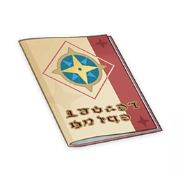

Teyvat & Unknown · Books & Literature
Teyvat Travel Guide
Alice’s three-volume Adventurers’ Guild magazine records personal travel diaries through Mondstadt, Liyue, and Inazuma, mixing useful observations with mischievous speculation.

An Adventurers’ Guild Magazine in Alice’s Voice
Teyvat Travel Guide is a three-volume regional magazine published by the Adventurers’ Guild and written as Alice’s travel diary. The volumes cover Mondstadt, Liyue, and Inazuma. Alice’s observations are often useful, but her entries also include reckless experiments and provocations; the format is a personal, comic account rather than an objective atlas.
The published set stops at Inazuma. Its three-volume scope should not be confused with a complete guide to every nation or with a universal survey of Teyvat.
Volume I: Mondstadt
The Mondstadt diary moves among local landscapes and historic sites. At Windrise, Alice notes the tradition that Vennessa ascended there while joking about searching for a device that would launch her. At Brightcrown Canyon and Stormterror’s Lair, she describes the old pass and Decarabian’s ring-shaped city, adding a travel writer’s first-person perspective to the older history of the region.
Alice’s suggestions about flattening Starsnatch Cliff or using Hilichurls in dangerous experiments are part of her deliberately outrageous voice, not practical recommendations or neutral reporting.
Volume II: Liyue
The Liyue issue records places such as Dihua Marsh, Guili Plains, and Guyun Stone Forest. At Guyun, Alice observes the stone pillars and unsettled Ley Line activity beneath the sea, but her entry does not name the defeated monster. Tartaglia later identifies the dormant god beneath Guyun as Osial, so that name comes from the Archon Quest rather than Alice’s diary.
The volume also remembers Guili Plains as a thriving marketplace before the Archon War and describes traveling with Zhongli. Such details make the book a useful companion source, while its speaker’s jokes and conjectures still need to be distinguished from the independent quest records.
Volume III: Inazuma
The Inazuma diary visits places including Tatarasuna, Mt. Yougou, and Yashiori Island. Alice describes the production of Inazuman Jade Steel and associates the material with a defeated god’s remains, but the book does not name that god in the relevant entry. Separate Orobashi records provide the name and history. The diary also notes Yae Miko’s shrine role and the Shogun’s wards against the serpent god’s lingering corruption.
Alice’s account of tinkering with the Mikage Furnace is one of the volume’s examples of her dangerous confidence. It is an anecdote in a travel diary, not an official statement that every proposed modification was completed or safe.
How to Read the Guide
The guide’s value lies in the places Alice visited, the local details she noticed, and the way later quests can confirm or qualify her remarks. When she leaves a creature unnamed, speculates about a landmark, or makes a joke sound like advice, preserve that distinction rather than converting the diary into a definitive history of the nation.
This is an original CoreGG reading guide, not an official HoYoverse article or a reproduction of the game text. Source links below identify the records used so you can check the original context.
Sources & references
Check these sources for the original game text and reference trail.